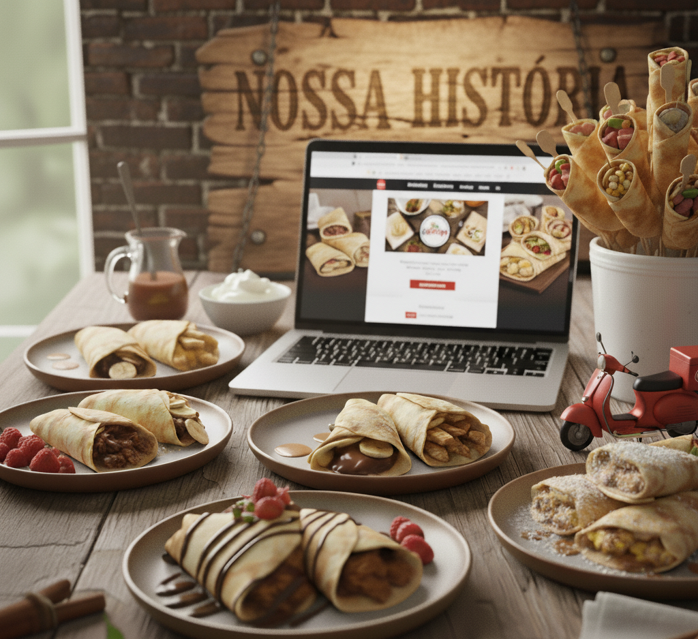

O Ponto de Partida
E aí, somos um casal apaixonados por crepes! Nossa história de amor com os crepes começou através de uma loja da cidade de Goiania, durante uma temporada lá. A gente simplesmente pirou na arte da massa perfeita e nas infinitas combinações de recheios.
A nossa fórmula
Nossa fórmula? Trazer essa experiência pra Guarulhos, com um twist brasileiro. É a técnica que piramos, com o sabor que é a nossa cara. Feito na hora, do nosso jeito pro seu.
+1
Ano
+200
Clientes
2x
Premiados